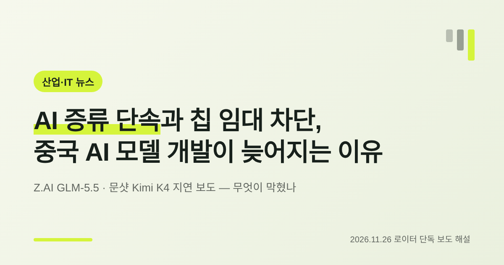
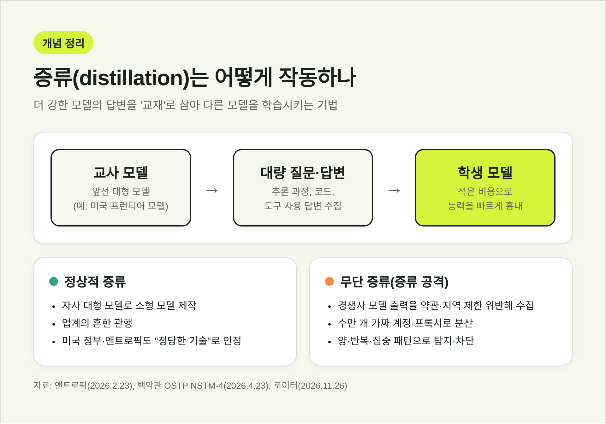
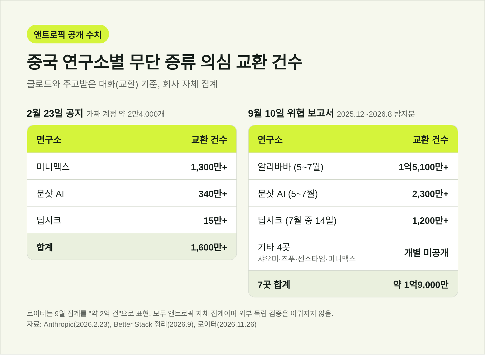
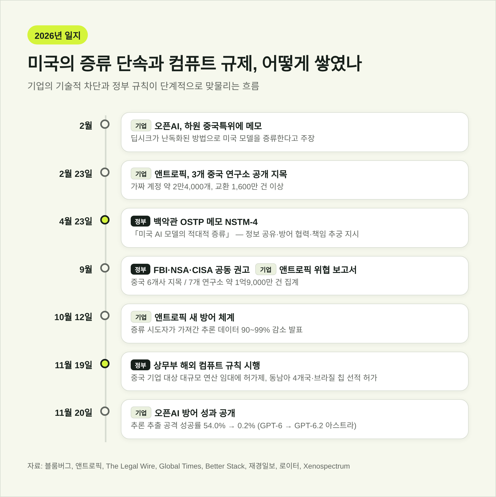
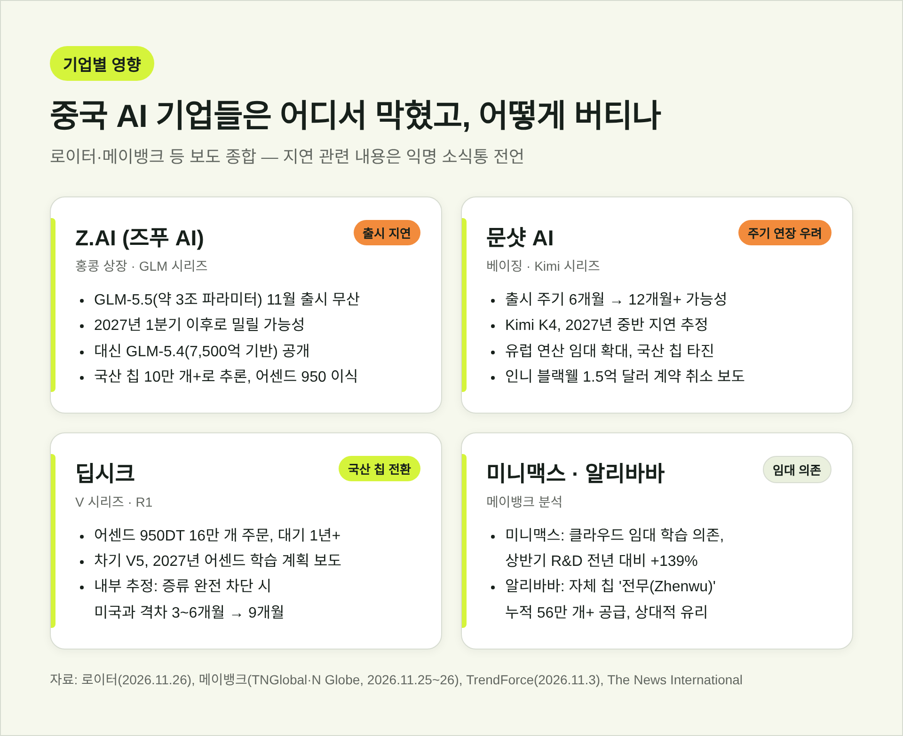
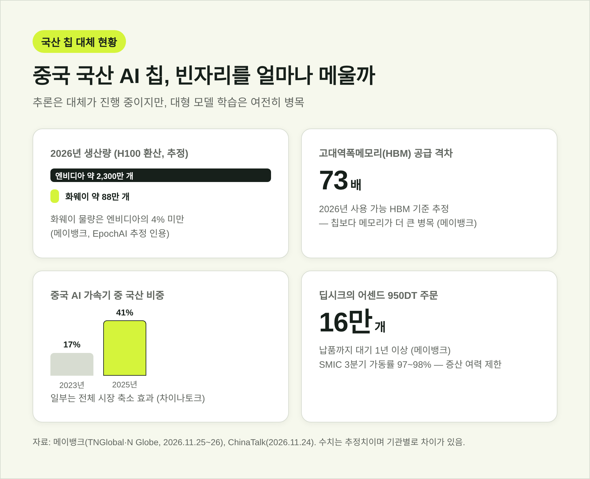
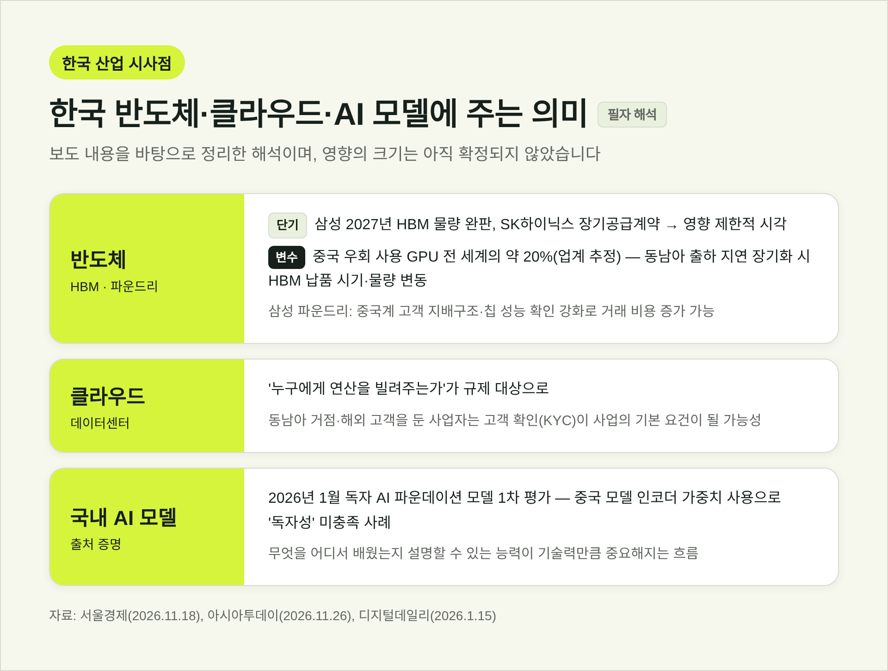

AI 증류 단속과 칩 임대 차단, 중국 AI 모델 개발이 늦어지는 이유

이번 글에서는 로이터가 11월 26일 단독 보도한 '증류 단속'과 중국 AI 모델 개발 지연 소식을 정리해 보겠습니다. 미국 AI 기업들의 증류 차단과 미국 정부의 해외 컴퓨트 규칙이 겹치면서, 중국 주요 연구소의 차기 모델 출시가 밀리고 있다는 내용입니다. 무엇이 막혔는지, 양측의 논리는 어떻게 다른지, 한국에는 어떤 의미가 있는지 차례로 살펴보겠습니다.
3줄 요약
- 로이터는 익명 소식통을 인용해 Z.AI(즈푸 AI)의 3조 파라미터급 GLM-5.5와 문샷 AI의 Kimi K4가 늦어질 수 있다고 전했습니다.
- 원인으로는 앤트로픽·오픈AI의 '증류' 차단 강화와, 11월 19일 시행된 미국의 해외 데이터센터 연산 임대 규칙이 함께 꼽힙니다.
- 미국은 안보·지식재산 보호를, 중국은 "근거 없는 주장"과 대응 조치를 내세우고 있어, 격차 전망도 엇갈립니다.
■ 무슨 일이 있었나: 차기 모델이 멈춰 선 두 회사
로이터 보도의 중심에는 두 회사가 있습니다. 먼저 홍콩 증시에 상장된 Z.AI입니다. 이 회사는 약 3조 개 파라미터로 설계한 차기 플래그십 GLM-5.5를 11월에 내놓을 계획이었습니다. 그러나 아직 출시하지 못했습니다.
소식통 한 명은 지연 원인의 일부로 "점점 효과적이 되는 증류 방지 장치"를 들었습니다. 여기에 새 미국 연산 규제까지 더해져 출시가 2027년 1분기 이후로 밀릴 수 있다고 했습니다. Z.AI는 대신 23일 GLM-5.4를 공개했습니다. 기존 7,500억 파라미터 모델을 바탕으로 했고, 회사는 새 설계 덕분에 2~3조 파라미터 모델에 견줄 만하다고 설명합니다.
두 번째는 '키미(Kimi)'로 알려진 베이징의 문샷 AI입니다. 문샷은 그동안 약 6개월마다 주력 모델을 냈습니다. 2025년 7월 K2, 올해 1월 K2.5, 7월 K3로 이어진 흐름입니다. 그런데 해외 연산 자원 접근을 완전히 잃으면 이 주기가 12개월 이상으로 늘 수 있다고 내부에서 보고 있다고 합니다. 차기작 K4는 2027년 중반쯤으로 밀릴 수 있다는 추정도 나왔습니다.
다만 이 내용은 모두 익명 소식통의 전언입니다. Z.AI는 논평 요청에 답하지 않았고, 두 회사 모두 지연을 공식 확인하지 않았습니다.
■ 증류란 무엇이고, 왜 쟁점이 됐나
증류는 어렵게 들리지만 원리는 단순합니다. 더 똑똑한 모델(교사)에게 질문을 많이 던지고, 그 답을 교재 삼아 다른 모델(학생)을 가르치는 방식입니다. 학생 모델은 처음부터 모든 것을 배우지 않아도 교사의 추론 방식과 말투를 빠르게 흉내 낼 수 있습니다.

이 기법 자체는 불법이 아닙니다. 회사가 자기 대형 모델로 작은 모델을 만드는 것은 업계의 흔한 관행입니다. 앤트로픽도, 백악관 과학기술정책실(OSTP)도 증류가 정당한 기술이라는 점은 분명히 적었습니다.
문제는 '남의 모델'을 상대로, 이용약관과 지역 제한을 어기고, 대규모로 할 때입니다. 앤트로픽 설명에 따르면 공격자들은 상업용 프록시 서비스를 통해 수많은 가짜 계정을 운영했습니다. 한 계정이 막히면 곧바로 다른 계정으로 갈아타는 구조였습니다. 개별 질문은 평범해 보여도, 질문의 양과 반복, 특정 능력에 대한 집중이 공격의 흔적이 됐다고 합니다.
예전에는 막대한 연산과 데이터를 직접 들여야 최신 모델을 따라잡을 수 있었습니다. 지금은 앞선 모델의 답을 모으는 것만으로도 상당 부분을 좁힐 수 있게 됐습니다. 미국 측이 증류를 '칩 수출통제의 뒷문'으로 보는 이유가 여기에 있습니다.
■ 미국 AI 기업들은 무엇을 했나
가장 구체적인 수치를 내놓은 곳은 앤트로픽입니다. 2월 23일 공지에서 딥시크·문샷·미니맥스 3곳이 약 2만4,000개의 가짜 계정으로 클로드와 1,600만 건 넘는 대화를 주고받았다고 밝혔습니다. 업체별로는 미니맥스 1,300만 건 이상, 문샷 340만 건 이상, 딥시크 15만 건 이상이었습니다.

9월 10일 위협 보고서에서는 규모가 훨씬 커졌습니다. 알리바바 한 곳에서만 5~7월 1억5,100만 건 이상이 나왔고, 하루 최대 약 300만 건에 이르렀다고 합니다. 문샷은 2,300만 건 이상, 딥시크는 7월 14일 동안 1,200만 건 이상으로 집계됐습니다. 샤오미·즈푸·센스타임·미니맥스까지 7곳을 합치면 약 1억9,000만 건입니다. 로이터는 이를 "약 2억 건"으로 표현했습니다.
이후 방어는 한층 단단해졌습니다. 앤트로픽은 10월 12일 새 방어 체계로 증류 시도자가 가져간 추론 데이터가 90~99% 줄었다고 발표했습니다. 정상 사용자를 공격자로 잘못 판단하는 비율은 0.1% 미만이라고 했습니다.
오픈AI도 비슷한 길을 걸었습니다. 2월에는 미 하원 중국특위에 보낸 메모에서 딥시크가 "난독화된 새 방법"으로 미국 모델에 "무임승차"한다고 주장했습니다. 11월 20일에는 내부 시험 결과를 공개했습니다. 숨겨진 추론 과정을 빼내는 공격의 성공률이 GPT-6 아스트라에서는 54.0%였지만, GPT-6.2 아스트라에서는 0.2%로 떨어졌다는 내용입니다. 주간 단위로 수천에서 수만 건의 계정 제재가 이뤄졌다고도 밝혔습니다.
다만 이 수치들은 모두 회사가 자체 집계한 것입니다. 외부에서 독립적으로 검증된 숫자는 아니라는 점을 함께 기억해 둘 필요가 있습니다.
■ 미국 정부의 조치: 메모에서 규칙까지
정부 차원의 움직임도 단계적으로 쌓였습니다. 4월 23일 마이클 크라치오스 OSTP 국장은 'NSTM-4'로 불리는 메모 「미국 AI 모델의 적대적 증류」에 서명했습니다. 주로 중국에 기반한 주체들이 수만 개 프록시 계정과 탈옥 기법으로 산업 규모의 증류를 벌이고 있다는 내용입니다. 메모는 업계와 정보를 나누고, 방어를 함께 만들고, 책임을 묻는 방안을 찾으라고 지시했습니다.
9월에는 FBI·NSA·CISA가 공동 권고문을 냈습니다. 중국 관영매체 글로벌타임스는 이 권고가 딥시크·문샷·알리바바·미니맥스·스텝펀·Z.AI 6곳을 지목했다고 전했습니다.

여기에 11월 19일 시행된 상무부 산업안보국(BIS)의 잠정 최종규칙이 더해졌습니다. 이 규칙은 지난 11월 17일 게시글에서 다룬 수출통제 확대의 연장선이라, 여기서는 핵심만 짚겠습니다.
- 중국에 본사를 둔 기업에 일정 규모(로이터 기준 H100 약 750개 상당)를 넘는 연산을 제공하는 해외 데이터센터는 허가가 필요합니다.
- 기존 사업자에게는 90일의 유예가 주어졌습니다.
- 말레이시아·싱가포르·인도네시아·태국·브라질로 가는 첨단 칩 선적에도 허가 요건이 붙었습니다.
증류 단속이 '데이터' 통로를 좁혔다면, 이 규칙은 '연산' 통로를 좁힌 셈입니다. 문샷이 인도네시아 데이터센터를 통해 엔비디아 블랙웰 칩을 쓰려던 1억5,000만 달러 계약을 취소했다는 디인포메이션 보도도 이 맥락에서 나왔습니다. 문샷은 이에 대해 논평을 거부했습니다.
■ 중국 기업들은 어떻게 버티고 있나

중국 기업들의 대응은 크게 세 갈래로 보입니다.
첫째, 증류 대상을 바꾸는 움직임입니다. 로이터 소식통에 따르면 문샷은 앤트로픽·오픈AI 데이터 확보가 어려워지자 구글과 메타 모델로 눈을 돌렸습니다. 10월에는 중국 기업들이 클로드 대신 GPT-6 아스트라를 표적으로 삼았다는 보도(디인포메이션 인용, 서울경제)도 있었습니다. 막히면 옮겨 가는 '연쇄 이동'으로 읽힙니다. 한편 문샷은 K3의 성능이 증류 덕분이라는 주장을 부인해 왔습니다. 7월 중국 매체 인터뷰에서 기반 구조를 독자적으로 바꾼 결과라고 설명했습니다.
둘째, 연산을 다른 곳에서 구하는 시도입니다. 문샷은 유럽에서 연산 임대를 늘리고, 중국 칩 제조사와 학습용 프로세서 사용을 논의할 계획이라고 합니다. 하지만 소식통은 중국 국내 용량만으로 부족분을 메우기는 어렵다고 봤습니다.
셋째, 화웨이 어센드 같은 국산 칩으로의 전환입니다. 말레이시아계 투자은행 메이뱅크는 Z.AI가 국산 칩 10만 개 이상으로 상용 추론을 돌리고, 연산 코드를 어센드 950으로 옮기고 있다고 분석했습니다. 딥시크는 어센드 950DT 16만 개를 주문했지만 1년 넘게 기다려야 하는 상황이라고 합니다. 대만 트렌드포스는 딥시크가 차기 V5를 2027년 어센드 950에서 학습할 계획이라는 중국 매체 보도를 전했습니다. 이 역시 익명 소식통 기반이고 공식 발표는 아닙니다.
■ 국산 칩은 빈자리를 채울 수 있을까
여기서부터 분석이 갈립니다. 메이뱅크는 화웨이의 올해 예상 생산량을 H100 환산 약 88만 개로 봤습니다. 엔비디아의 약 2,300만 개와 비교하면 4%에도 못 미칩니다. AI 칩에 필수인 고대역폭메모리(HBM)의 사용 가능 공급 격차는 73배로 추정했습니다. 추론용으로는 국산 칩이 꽤 대체할 수 있지만, 대형 모델 학습은 훨씬 어렵다는 진단입니다.

반대 방향의 숫자도 있습니다. 미국 정책 분석 매체 차이나토크에 따르면 중국 AI 가속기 중 국산 비중은 2023년 17%에서 2025년 41%로 올랐습니다. 화웨이 어센드의 연간 물량도 100만 개 미만에서 약 150만 개 수준으로 늘었다고 봤습니다. 다만 같은 글은 이 상승의 일부가 전체 시장 축소 때문이며, 생산은 공장·수율·HBM에 묶여 있다고 덧붙였습니다. 중국 최대 파운드리 SMIC의 3분기 가동률도 97~98%로, 추가 주문을 흡수할 여력이 크지 않습니다.
메이뱅크는 승자와 패자도 나눴습니다. 자체 칩과 클라우드를 가진 알리바바·텐센트·바이두는 상대적으로 유리하고, 연산을 빌려 쓰는 문샷·미니맥스는 불리하다는 것입니다. 규제가 중국 AI 업계 안에서도 '가진 자'와 '빌리는 자'의 격차를 벌릴 수 있다는 뜻입니다.
■ 양측의 논리: 기술 보호인가, 경쟁 억제인가
미국 정부와 기업의 논리는 두 가지입니다. 하나는 안보입니다. 앤트로픽은 무단 증류된 모델에는 생물무기·사이버 악용을 막는 안전장치가 빠질 수 있다고 경고했습니다. 다른 하나는 지식재산과 수출통제의 실효성입니다. 남의 모델 출력으로 빠르게 따라잡는다면, 칩 통제가 효과가 없는 것처럼 잘못 보일 수 있다는 주장입니다.
중국 측의 반박도 분명합니다. 중국 상무부는 9월 미국의 주장이 "근거 없다"며, 증류는 AI 분야에서 모델들이 서로 배우는 "흔한 관행"이라고 했습니다. 증류를 구실로 중국 기업을 억누르면 "단호한 대응 조치"를 취하겠다고도 경고했습니다. 11월 17일에는 해외 컴퓨트 규칙을 두고 "대화와 협력으로 돌아오라"며 대응 조치를 예고했습니다. 외교부 궈자쿤 대변인도 "필요한 조치"를 언급했습니다.
미국 업계 안에서도 시선이 하나는 아닙니다. 엔비디아·마이크로소프트·메타 쪽은 증류를 통상적인 경쟁의 일부로 보는 입장으로 전해집니다. 독립 연구자들 사이에서는 문샷 K3가 증류 덕분이라는 주장에 의문을 제기하는 목소리도 있습니다. 어느 쪽 주장도 아직 법정에서 판단을 받은 적은 없습니다.
■ 앞으로의 전망: 격차는 벌어질까, 자립은 빨라질까
격차 전망 역시 엇갈립니다. 딥시크 연구진은 10월 내부적으로, 증류가 완전히 막히면 미국 최고 모델과의 격차가 3~6개월에서 9개월로 벌어질 수 있다고 추정했다고 합니다. 공개된 수치가 아니고 조건이 붙은 추정이라는 점은 감안해야 합니다.
차이나토크는 원격 접근 규칙만으로 2028년 말까지 중국의 프런티어급 연산이 약 6개월 늦춰질 것으로 봤습니다. 범위는 4~9개월이고, 모든 칩을 세면 3.5개월로 줄어듭니다. 연산 격차가 곧 성능 격차는 아니며, 증류나 뒤따르는 쪽의 이점 때문에 실제 성능 차이는 더 좁을 수 있다고도 적었습니다. 집행 의지와 인력이 받쳐 줄지에도 의문을 달았습니다.
반론의 핵심은 '규제가 오히려 자립을 앞당긴다'는 것입니다. 중국 화둥사범대 천훙 교수는 미국의 칩 제한이 중국의 비용을 올릴 수는 있어도 성장을 막지는 못한다고 했습니다. 차이나토크도 이번 규칙이 베이징의 자립 강경파에 힘을 실어 줄 수 있다고 봤습니다. 중국 정부는 이날 공업정보화부 등 3개 부처 명의로 2030년 차세대 네트워크 로드맵을 내고, 가속기 1만 장 이상 연산 클러스터 구축과 전국 연산 자원 통합 관리 플랫폼을 목표로 제시했습니다.
시장도 민감하게 반응했습니다. 규칙 발표 다음 날 미니맥스 주가는 장중 최대 6.5%, Z.ai는 6.8% 하락했고, SMIC는 최대 9% 올랐다고 더넥스트웹이 전했습니다. (특정 종목에 대한 투자 권유가 아닙니다.)
가까운 변수도 있습니다. 중국이 미국에 대해 유예해 온 갈륨·게르마늄·안티모니 수출 금지의 유예 기간이 11월 27일 끝납니다. 이를 연장할지 여부가 중국의 대응 수위를 가늠할 첫 신호가 될 수 있습니다. 기존 데이터센터 사업자의 90일 유예가 끝나는 2027년 2월 중순(시행일 기준 계산) 전후도 지켜볼 시점입니다.
■ 한국 산업에 주는 시사점 (해석)
아래는 보도 내용을 바탕으로 한 필자의 해석입니다.

반도체는 단기와 중기를 나눠 볼 필요가 있습니다. 서울경제는 삼성전자가 2027년 HBM 물량이 이미 다 팔렸다고 밝혔고, SK하이닉스도 장기공급계약을 맺어 당장 영향은 크지 않다는 시각이 많다고 전했습니다. 다만 업계는 중국이 우회로로 쓰던 GPU를 전 세계 사용량의 약 20%로 보고 있어, 동남아 서버 출하 지연이 길어지면 HBM 납품 시기와 물량에 변수가 될 수 있습니다. 삼성 파운드리는 중국계 고객의 지배구조와 칩 성능 확인 절차가 까다로워져 거래 비용이 늘 수 있다는 분석이 나왔습니다.
클라우드·데이터센터에서는 '누구에게 연산을 빌려주는가'가 규제 대상이 됐다는 점이 중요해 보입니다. 국내 사업자가 동남아에 거점을 두거나 해외 고객을 받을 때, 고객 확인 절차가 사업의 기본 요건이 될 가능성이 큽니다.
국내 AI 모델에는 '출처 증명'의 문제가 남습니다. 올해 1월 과기정통부의 독자 AI 파운데이션 모델 1차 평가에서 네이버클라우드는 중국 모델 인코더의 가중치를 그대로 쓴 점 때문에 독자성 요건을 넘지 못했습니다. 증류 단속이 강해질수록, 어떤 데이터와 어떤 모델에서 배웠는지를 설명할 수 있는 능력이 기술력만큼 중요해질 것으로 보입니다.
정리하면 이렇습니다. 미국은 칩이라는 '연산'의 문과, 증류라는 '데이터'의 문을 동시에 좁히고 있습니다. 중국은 국산 칩과 다른 연산처로 버티며 반발하고 있고, 그 효과를 두고는 몇 달의 지연이라는 분석부터 자립 가속이라는 반론까지 폭이 넓습니다.
"싸게 빨리 따라잡는 길이 좁아졌다" — 이번 보도가 남긴 메시지는 이 한 줄로 요약됩니다.
그 길이 막히면 중국 AI가 멈출지 묻는다면, 아직은 속도가 느려질 뿐이라고 답하는 편이 정직할 것입니다.
참고자료
- Reuters(Investing.com 재게재), "Exclusive-US chip curbs, distillation crackdown threaten Chinese AI model development, sources say", 2026-11-26, https://www.investing.com/news/stock-market-news/exclusiveus-chip-curbs-distillation-crackdown-threaten-chinese-ai-model-development-sources-say-5052154
- Daily Maverick(Reuters 재게재), "US chip curbs, distillation crackdown threaten Chinese AI model development, sources say", 2026-11-26, https://www.dailymaverick.co.za/article/2026-11-26-us-chip-curbs-distillation-crackdown-threaten-chinese-ai-model-development-sources-say/
- The News International, "US chip curbs and distillation crackdown slow Chinese AI model rollouts", 2026-11-26, https://www.thenews.com.pk/latest/1425197-us-chip-curbs-and-distillation-crackdown-slow-chinese-ai-model-rollouts
- N Globe, "US overseas compute rules squeeze Chinese AI firms as analysts warn gap will widen", 2026-11-26, https://nglobenews.com/en/article/us-chip-leasing-rule-china-ai-domestic-hardware-2026-11-26
- TNGlobal, "US chip curbs to widen gap between Chinese AI companies, says Maybank", 2026-11-25, https://technode.global/2026/11/25/us-chip-curbs-to-widen-gap-between-chinese-ai-companies-says-maybank/
- ChinaTalk, "The Remote Access Rule Buys Six Months of Compute Lead", 2026-11-24, https://www.chinatalk.media/p/the-remote-access-rule-will-slow
- Anthropic, "Detecting and preventing distillation attacks", 2026-02-23, https://anthropic.com/news/detecting-and-preventing-distillation-attacks
- Better Stack, "Anthropic's September 2026 Threat Report: Illicit Distillation and the Labs Behind It", 2026-09, https://betterstack.com/community/guides/ai/anthropic-threat-report-2026/
- Xenospectrum, "OpenAI Cuts Success Rate of Reasoning-Extraction Attacks From 54% to 0.2% in GPT-6.2 Astra", 2026-11-21, https://xenospectrum.com/en/openai-gpt-distillation-defense-metrics/
- Asia Daily, "US Anti-Distillation Defenses Raise the Cost of Chinese AI Development", 2026-11, https://asiadaily.org/news/20387/
- Bloomberg, "OpenAI Claims DeepSeek Distilled US Models to Gain an Edge", 2026-02-12, https://www.bloomberg.com/news/articles/2026-02-12/openai-accuses-deepseek-of-distilling-us-models-to-gain-an-edge
- The Legal Wire, "OSTP issues memorandum alleging foreign entities are conducting coordinated campaigns to distill US frontier AI systems", 2026-04-23, https://thelegalwire.ai/ostp-issues-memorandum-alleging-foreign-entities-are-conducting-coordinated-campaigns-to-distill-us-frontier-ai-systems/
- Global Times, "China dismisses US AI distillation claims, vows countermeasures", 2026-09-09, https://www.globaltimes.cn/page/202609/1370195.shtml
- Global Times, "China slams new US rule curbing China's access to advanced chips as typical economic coercion", 2026-11-17, https://www.globaltimes.cn/page/202611/1374456.shtml
- Global Times, "China unveils 2030 roadmap for next-generation networks, eyes 6G rollout and computing power expansion", 2026-11-26, https://www.globaltimes.cn/page/202611/1375090.shtml
- The Next Web, "China weighs response to US chip curbs before Trump summit", 2026-11, https://thenextweb.com/news/china-weighs-response-to-us-chip-curbs-before-trump-summit
- TrendForce, "DeepSeek V5 Could Complete Training on Huawei Ascend 950 in 2027, Moving Beyond Inference", 2026-11-03, https://www.trendforce.com/news/2026/11/03/news-deepseek-v5-could-complete-training-on-huawei-ascend-950-in-2027-moving-beyond-inference/
- 서울경제, "美는 中 AI칩 우회 봉쇄, 연준은 금융 위험 경고…삼성·하닉 영향은", 2026-11-18, https://m.sedaily.com/article/20115634
- 서울경제, "딥시크·문샷, GPT '아스트라' 표적…클로드 증류 막히자 대안 찾아", 2026-10-30, https://m.sedaily.com/article/20108015
- 아시아투데이, "美 AI칩 규제에 엔비디아 동남아 서버 출하 보류…삼성·SK하이닉스 HBM 영향은", 2026-11-26, https://www.asiatoday.co.kr/kn/view.php?key=20261126010010408
- 재경일보, "앤트로픽, AI 모델 '증류' 공격 90~99% 차단", 2026-10-13, https://news.jkn.co.kr/post/1020567
- 디지털데일리, "네이버클라우드, 독자 AI 2차평가 진출 고배 '독자성 요건 부족'", 2026-01-15, https://www.ddaily.co.kr/page/view/2026011517434177623